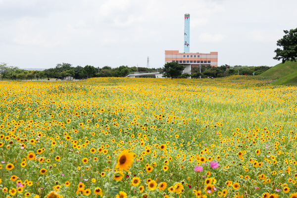

花的奇妙之旅
台灣雖然國土面積不大，但小小的土地上卻生長著許多種花，從城市到鄉村，從高山到平原，都那麼的讓人回味無窮，圖庫缺少照片的，IG、網美需要分享的，以下我為各位整理的，每個地區的賞花景點，花，這個字對我有特別的意義，她給我了許多珍貴的回憶，希望它也能給你們屬於你們的回憶。
北部
North
中部
Contral
南部
South
東部
East
2020 WZU Danny
home
北部
「北部地區」包括臺北市、新北市、基隆市、宜蘭縣、桃園市、新竹縣及新竹市等7個縣市。
桃源仙谷鬱金香
214公頃的神祕花谷、夢幻神隱的桃花源，漫步在桃源仙谷，一陣林木、花草混合著土壤的芬芳撲鼻而來，艷陽下數十種品種、上萬朵鬱金香在驕陽下一齊盛放，仿如大自然的調色盤般將綠色山野點綴得繽紛奪目、耀眼燦爛，放眼望去，桃源仙谷整座山頭被鬱金香披上一層繽紛絢爛的披肩，不但彩色了園區，更活潑了大地。
陽明山竹子湖海芋季
美麗又帶點浪漫的白海芋夢幻到像幅畫，盛開花田永遠是旅人鏡頭追逐的主角，滿開的海芋田也不意外。海芋的外形簡單清純，白色的海芋更是清新柔美。海芋的花語非常美，是純潔、幸福、清秀、純淨的愛。海芋本身也代表了真誠、簡單、 純潔、內蘊清秀。
烏來賞櫻大道
每年烏來櫻花季，烏來賞櫻大道，就是烏來櫻花最為密集的地方了，這一條賞櫻大道，在每年櫻花季時，可以看到滿滿櫻花映入眼簾，有著不同品種的花，像是吉野櫻、八重櫻等。烏來賞櫻大道是許多人拍照打卡的朝聖景點，其實從環山路全家便利商店右手邊的西羅岸路上行，一直到保慶宮為止，沿路也是櫻花成林，這條賞櫻秘境的優點是遊客少，可以居高遠望烏來老街。
桃園向陽農場
夏季最金光亮眼的花卉之一向日葵，桃園就有欣賞向日葵免門票的好地方，向陽農場是北部最大的向日葵主題農場，在向陽農場內不只有廣闊的向日葵花海，裡面還有老闆特別從日本引進的新品種－－高達200公分的「巨大向日葵」，讓每一位來到這裡拍照的人都可以小鳥依人的拍出美照！
陽明山芒花
時序進入蕭瑟的秋日，大地鋪上一層銀白色調，如羽毛般的花穗在風中搖曳，猶如整片銀白海浪陣陣波動，彷彿置身夢幻的雪白世界，當陽光灑落大地時，整片「芒花浪」被金光照耀，叫人眷戀不已。
首頁
中部
南部
東部
2020 WZU Danny
home
中部
「中部地區」包括苗栗縣、臺中市、彰化縣、南投縣及雲林縣等5個縣市，位處臺灣心臟地帶。
彰化溪州公園
彰化縣花卉種植面積產銷數量是全國之冠，，廣達20餘公頃之活動主場地溪州公園，每年平均都有數十萬的遊客參與，一起來發現彰化花卉之美和鄉鎮特色喔！
萬豐社區落羽松森林
位於萬豐社區落羽松森林，萬豐國小附近，上百棵的落羽松就位於大馬路旁的巷子裡面，秋季整座森林樹葉變紅後相當漂亮，連地上都鋪上了落羽松地毯，雖然森林空間不算大，還是很好拍哦。
九族文化村
三十年歷史的九族文化村雖不像迪士尼、環球那樣大規模，但卻有全台最大『歐式花園』，配合不同季節花季，讓遊客們可以欣賞到薰衣草、櫻花等，四季皆有不同賞花美景。
后里向日葵花海

台中后里花田綠廊又稱環保公園或花田拼布，位於后里資源回收廠旁，之前還曾在這裡辦過台中國際花毯節，現在種植約1.2公頃的花海，有時是大波斯菊有時是向日葵，這次是滿滿的向日葵花海，相當漂亮，雖然不能進入花田，但還是可以拍出被向日葵花海包圍的感覺哦，趕快找時間來旅行賞花。
龍井花海
每年在台中的龍井，秋冬的時候都會舉辦花海節，除了花海外，也有一些代表在地的可愛裝飾造景，為花海增添了不少美麗的點綴，象徵性的裝置藝術，這些也是花海的必拍亮點。
首頁
北部
南部
東部
2020 WZU Danny
home
南部
以高雄與臺南兩大城市組成雙核的區域核心，並形成臺灣第三大的高雄都會區及第五大的臺南都會區，另有以嘉義市為核心的嘉義都會區，共計三個都會帶。
台南白河蓮花
每年初夏，是荷花綻放的季節，走進白河，晴朗的夏日天空，飛機穿越藍天，搭配翠綠的荷花田與金黃飽和的稻田交錯的背景，這是白河夏天特有的鄉村畫面，風情恬適，接著可以去蓮花公園橋上欣賞左右兩側的荷花，走過對面也有景觀台，這裡也是一處不錯的踏青賞蓮勝地哦。
虎頭埤阿勃勒
黃澄澄的花海宛如金色隧道般浪漫，隨著微風吹拂，細小的金黃花瓣隨風落在肩上與腳邊，營造出夢幻氛圍，形成一幅美麗的風景畫。環湖步道可以近距離欣賞漂亮的阿勃勒，甚至很多掛滿金色花串的枝啞就在眼前，襯著湖面光影完全是殺記憶卡的節奏。
學甲蜀葵花
蜀葵花田裡有著紅、粉紅、白、黃各種一盞又一盞顏色繽紛的花朵，繽紛顏色相互交錯著極為美觀，沒有照片的朋友，不妨來這裡走走，漫步花海鄉間田園，大口呼吸自然療癒氣息，可以撫慰身心、抒解壓力，還可以增添美好回憶。
嘉義九重葛
盛開的九重葛染上了繽紛的紅色、純白及粉色，怎麼拍都仙氣十足。整排九重葛花墻超適合當背景，漸層的花海若能搭配陽光顯得更為吸睛。花語熱情，堅韌不拔，頑強奮進。
屏東舊鐵橋下波斯菊
從橋上往下俯瞰這片大波斯菊花海(以紅色、粉紅色、白色三種顏色混搭)，點綴了原本綠油油的草地，為大地增添了許多色彩。
首頁
北部
中部
東部
2020 WZU Danny
home
東部
臺灣東部地區包含花蓮縣及臺東縣2個縣市
太麻里金針山金針花
金針花花朵盛開期間極短，又稱「一日美人」。金針山賞金針花真的超級美，山上風景很好，吹著有如冷氣的微風搭配著雲霧山嵐繚繞的金針花山區賞花，如童話故事情節般浪漫。
關山油菜花
一大片的油菜花海是農民一整年的辛苦與勞累用花綻放的方式呈現在大家眼前，以黃色傾訴著冬天的到來，遼闊的油菜花海配上連綿的山巒，產生出一種遼闊悠遠的感覺。
馬亨亨大道鳳凰花
六月到來，走在馬亨亨大道上，總能感受到初夏最濃烈的情感，一株株火紅似燒天的鳳凰木，無止盡的綻放著，她們在像誰訴說著自己的情感呢？是天空雲朵、路人還是即將畢業的畢業生。
金峰鄉洛神花
十月至十一月為洛神花盛開時節，映入眼簾的是一片火紅的洛神花田，一顆顆紅寶石與綠油油的草地交織在一起，如此奇妙的景象，吸引著要拍照的我們。
初鹿農場櫻花
在櫻花樹林間漫步，隨時都可以看到各種大自然的鳥類與動物在樹間跳躍穿梭，映入眼簾的是藍天白雲與粉紅色的櫻花。
首頁
北部
中部
南部
2020 WZU Danny